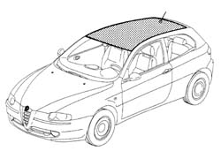
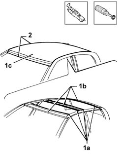
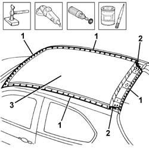
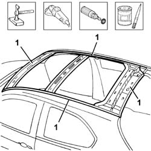
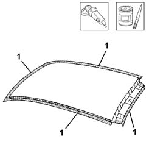
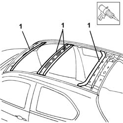
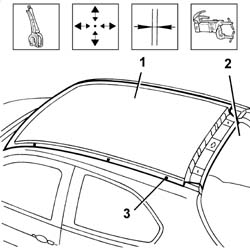
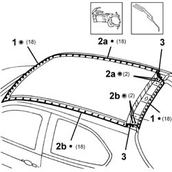
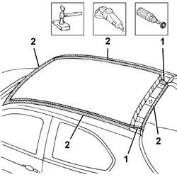
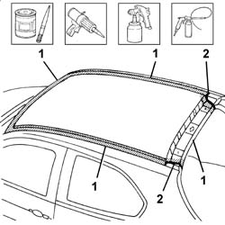

7210E28 R.R. ROOF PANEL
- Path
- Procedures > 72 PANELS AND FRAME > 7210 REMOVING REFITTING > 7210E external parts > 7210E28 R.R. ROOF PANEL
- Kind
- repair procedure (removal / refitting; the operation number is the code)
- Applies to
- all engines; all production periods
- Interactive page
- https://sloeber94.github.io/elrnDB-a147/en/#/3025973
Applies to: all engines; all production periods
 Removing
Removing
 Refitting
RefittingCheck if any of the connected parts are deformed by checking body alignment dimensions. Use appropriate measurement tools (reference rigs, templates or gauges).
Straighten the body if necessary.

Applies to: all engines; all production periods
1. Use a vibrating cutter with suitable blade to cut the sealant (1a) between reinforcements (1b) of roof panel (1c).
2. Remove the paint from around the edge of the roof panel using a rotary brush to reveal weld spots.

Applies to: all engines; all production periods
1. Use a chamfering machine to crop weld spots.
Drill out any weld spots not accessible to the chamfering machine.
2. Use an oxyacetylene torch and steel brush to unweld the braze welds at the corners of the roof.
Use a chisel and hammer to remove spots ground previously.
3. Remove the roof panel from the car.

Applies to: all engines; all production periods
1. Straighten the roof panel seat flaps using a mallet and profiled stake.
Use a grinding wheel to remove the weld spot residues.
Use a rotary brush to clean treated areas.
Apply the electric weld paint finish.

Applies to: all engines; all production periods
Refitting
Removing1. Use a rotary brush to remove the corrosion-proof treatment from around the inner and outer edges of the part.
Apply the electroweldable paint finish to the affected parts.

Applies to: all engines; all production periods
Reapply the seal between roof panel and reinforcements.

Applies to: all engines; all production periods
1. Fit the part correctly using self-locking clips.
2. Fit the tail-gate.
Check alignment and gaps around the edges.
Use a ruler to check the windscreen compartment diagonals
3. Carry out some spot welds on the roof panel.
Remove the tailgate.

Applies to: all engines; all production periods
1. Use a spot welder to weld the roof in the area of the windscreen frame (1a) and rear window frame (1b).
2. Use a spot welder to weld the roof panel in the area of right side panel (2a) and left side panel (2b).
3. Use an oxyacetylene torch to hard-solder the roof panel corners at the rear roof panel corners.

Applies to: all engines; all production periods
Correct any deformations in the panel using a profiled stake and mallet.
1. Use a grinding wheel to level the braze welds in the areas shown in the figure.
2. Use a rotary brush to clean the newly-welded areas.

Applies to: all engines; all production periods
1. Apply rust-proofing to newly-welded areas.
2. Apply sealant to the areas indicated in the figure.
Apply paint.
Apply wax.
